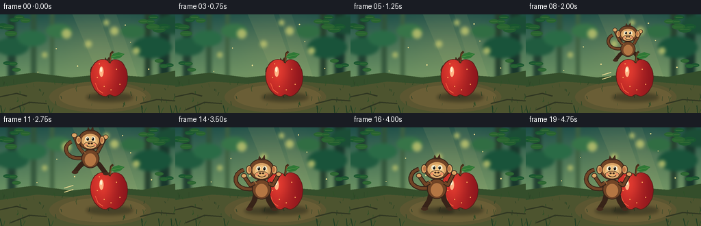
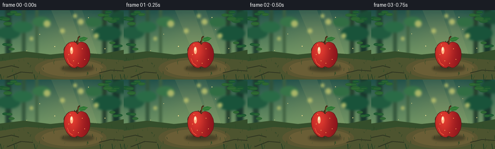
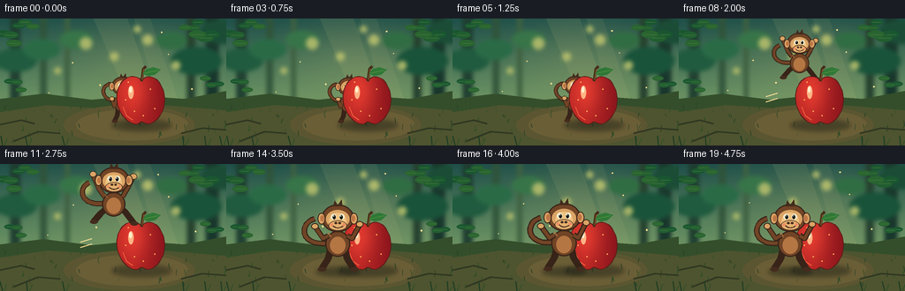
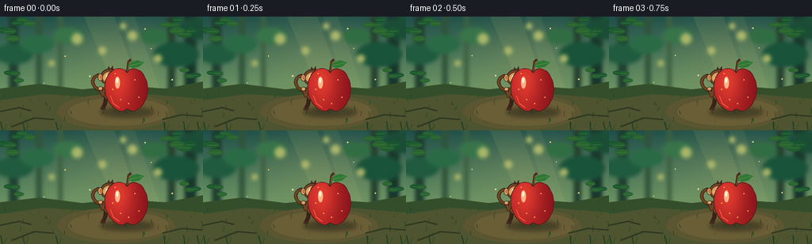

CODING AGENTS AS PIXEL WORLD MODELS
traex/GPT-5.6-Sol · dynamic_spatial_relationship_0054
点击播放 · 原生 RGB 像素
逐轮保存的候选
回放视频、检查图与代码变化。
每份候选均可单独播放。实际图片检查记录在下方工具轨迹中。
候选 01播放与检查图
点击播放 · 原生 RGB 像素


展开代码变化
--- 上一保存版本
+++ 本次保存版本
@@ -0,0 +1,266 @@
+from pathlib import Path
+import math
+import numpy as np
+from PIL import Image, ImageDraw, ImageFilter
+import artifact_io
+
+# A small hand-drawn, supersampled animation. All geometry is generated locally.
+W, H, N, SS = 256, 144, 20, 3
+RW, RH = W * SS, H * SS
+rng = np.random.default_rng(54)
+
+def sc(v): return int(round(v * SS))
+def box(b): return tuple(sc(v) for v in b)
+def pts(p): return [(sc(x), sc(y)) for x, y in p]
+
+def ellipse(d, b, fill, outline=None, width=1):
+ d.ellipse(box(b), fill=fill, outline=outline, width=max(1, sc(width)))
+def polygon(d, p, fill): d.polygon(pts(p), fill=fill)
+def line(d, p, fill, width=1, joint='curve'):
+ d.line(pts(p), fill=fill, width=max(1, sc(width)), joint=joint)
+
+def cubic(p0,p1,p2,p3,n=18):
+ out=[]
+ for t in np.linspace(0,1,n,endpoint=False):
+ u=1-t
+ out.append((u**3*p0[0]+3*u*u*t*p1[0]+3*u*t*t*p2[0]+t**3*p3[0],
+ u**3*p0[1]+3*u*u*t*p1[1]+3*u*t*t*p2[1]+t**3*p3[1]))
+ return out
+
+def background():
+ yy = np.arange(RH)[:,None] / SS
+ xx = np.arange(RW)[None,:] / SS
+ top=np.array([30,79,73.],float); mid=np.array([112,151,101.]); bot=np.array([59,75,46.])
+ a=np.clip(yy/98,0,1)[...,None]
+ arr=top[None,None,:]*(1-a)+mid[None,None,:]*a
+ b=np.clip((yy-88)/56,0,1)[...,None]
+ arr=arr*(1-b)+bot[None,None,:]*b
+ # warm clearing in the center, with subtle natural texture
+ glow=np.exp(-(((xx-148)/83)**2+((yy-54)/52)**2))[...,None]
+ arr=arr*(1-.18*glow)+np.array([205,188,111.])[None,None,:]*(.18*glow)
+ noise=rng.normal(0,1.4,(RH,RW,1))
+ arr=np.clip(arr+noise,0,255).astype(np.uint8)
+ im=Image.fromarray(arr,'RGB')
+ d=ImageDraw.Draw(im)
+ # mist-softened far trees
+ for x,wid,col in [(17,11,(30,61,47)),(49,7,(48,83,57)),(216,9,(38,66,47)),(240,15,(25,55,44)),(76,5,(62,96,64))]:
+ d.rounded_rectangle(box((x-wid/2,-8,x+wid/2,112)),radius=sc(wid/2),fill=col)
+ # distant shrubs and bokeh
+ for x,y,r,c in [(18,47,24,(32,91,63)),(47,35,21,(42,107,70)),(222,48,29,(25,83,58)),(194,25,18,(49,109,67)),(86,24,19,(55,116,72)),(251,15,25,(27,77,54))]:
+ ellipse(d,(x-r,y-r*.55,x+r,y+r*.55),c)
+ for x,y,r in [(97,28,7),(129,43,5),(167,24,6),(199,53,5),(65,59,4),(155,12,4)]:
+ ellipse(d,(x-r,y-r,x+r,y+r),(168,181,104))
+ im=im.filter(ImageFilter.GaussianBlur(sc(2.2)))
+ d=ImageDraw.Draw(im)
+ # sunlight shafts
+ overlay=Image.new('RGBA',(RW,RH),(0,0,0,0)); od=ImageDraw.Draw(overlay)
+ polygon(od,[(105,-2),(143,-2),(181,105),(151,105)],(244,221,137,20))
+ polygon(od,[(151,-2),(169,-2),(205,103),(183,103)],(255,230,147,14))
+ im=Image.alpha_composite(im.convert('RGBA'),overlay)
+ d=ImageDraw.Draw(im)
+ # ground banks / clearing
+ polygon(d,[(0,91),(49,85),(104,92),(151,87),(208,91),(256,82),(256,144),(0,144)],(52,78,43,255))
+ polygon(d,[(0,106),(54,98),(116,102),(173,97),(256,104),(256,144),(0,144)],(77,84,47,255))
+ # a soft earthen spotlight beneath the subjects
+ ellipse(d,(72,98,220,143),(91,86,49,255))
+ ellipse(d,(86,103,213,138),(106,94,54,255))
+ # roots / grass strokes
+ for i in range(52):
+ x=float(rng.uniform(0,256)); y=float(rng.uniform(99,142)); h=float(rng.uniform(2,8))
+ c=(45,72+int(rng.integers(-8,9)),38,255)
+ line(d,[(x,y),(x+rng.uniform(-2,2),y-h)],c,float(rng.uniform(.45,1.1)))
+ for p in [[(0,120),(24,115),(39,119)],[(205,130),(229,124),(256,126)],[(15,139),(43,128),(68,130)]]:
+ line(d,p,(48,55,34,255),2)
+ # frame the clearing with crisp foliage
+ for x,y,ang,s in [(4,17,.2,1.1),(21,8,-.5,.9),(239,18,2.6,1.2),(224,4,2.2,.9),(11,71,.1,.8),(247,74,3.0,.8)]:
+ for j in range(3):
+ a=ang+(j-1)*.55; cx=x+math.cos(a)*j*8; cy=y+math.sin(a)*j*8
+ rx=8*s; ry=3.5*s
+ ellipse(d,(cx-rx,cy-ry,cx+rx,cy+ry),(25+8*j,86+7*j,48,255))
+ line(d,[(cx-rx*.7,cy),(cx+rx*.7,cy)],(65,116,58,255),.55)
+ return im.convert('RGB')
+
+BG=background()
+
+def draw_leaf(d,cx,cy,ang,s,fill=(47,120,54,255), vein=(112,161,75,255)):
+ ca,sa=math.cos(ang),math.sin(ang)
+ def T(x,y): return (cx+(x*ca-y*sa)*s,cy+(x*sa+y*ca)*s)
+ shape=[T(-10,0),T(-5,-4),T(3,-4.5),T(11,0),T(3,4.5),T(-5,4)]
+ polygon(d,shape,fill); line(d,[T(-8,0),T(8,0)],vein,.7)
+
+def apple_shape(cx=160):
+ p=[]
+ p+=cubic((cx,70),(cx-7,62),(cx-21,65),(cx-26,78))
+ p+=cubic((cx-26,78),(cx-32,94),(cx-24,112),(cx-12,118))
+ p+=cubic((cx-12,118),(cx-4,122),(cx-2,117),(cx,117))
+ p+=cubic((cx,117),(cx+3,117),(cx+7,122),(cx+14,117))
+ p+=cubic((cx+14,117),(cx+27,108),(cx+30,88),(cx+21,74))
+ p+=cubic((cx+21,74),(cx+15,64),(cx+5,64),(cx,70))
+ return p
+
+def draw_apple(im,cx=160):
+ # Color is clipped to a hand-built apple mask for rounded, dimensional shading.
+ shp=apple_shape(cx)
+ mask=Image.new('L',(RW,RH),0); md=ImageDraw.Draw(mask); polygon(md,shp,255)
+ yy=np.arange(RH)[:,None]/SS; xx=np.arange(RW)[None,:]/SS
+ light=np.exp(-(((xx-(cx-9))/18)**2+((yy-82)/25)**2))
+ shade=np.clip((xx-(cx-9))/44,0,1)
+ r=182+44*light-54*shade; g=37+22*light-20*shade; b=35+13*light-8*shade
+ grad=np.dstack([r,g,b]).clip(0,255).astype(np.uint8)
+ im.paste(Image.fromarray(grad,'RGB'),(0,0),mask)
+ d=ImageDraw.Draw(im,'RGBA')
+ line(d,shp+[shp[0]],(90,30,24,230),1.15)
+ # dappled skin, reflected light, and glossy highlight
+ ellipse(d,(cx-15,76,cx-9,91),(255,180,133,82))
+ ellipse(d,(cx-14,77,cx-11,84),(255,239,205,185))
+ line(d,[(cx-21,100),(cx-17,110),(cx-10,115)],(245,94,64,105),1.1)
+ for dx,dy in [(-18,92),(-8,105),(10,80),(15,102),(2,110),(-15,72)]:
+ ellipse(d,(cx+dx-.7,dy-.7,cx+dx+.7,dy+.7),(255,171,92,125))
+ # stem and leaf above the fruit
+ line(d,[(cx,71),(cx+2,57),(cx+5,54)],(68,45,25,255),3)
+ line(d,[(cx+.5,69),(cx+2.5,57)],(138,91,44,255),1)
+ draw_leaf(d,cx+11,60,-.22,1.0)
+
+def shadow(im,cx,cy,rx,alpha=90):
+ lay=Image.new('RGBA',(RW,RH),(0,0,0,0)); d=ImageDraw.Draw(lay)
+ ellipse(d,(cx-rx,cy-rx*.20,cx+rx,cy+rx*.20),(22,27,20,alpha))
+ lay=lay.filter(ImageFilter.GaussianBlur(sc(2.3)))
+ im.alpha_composite(lay)
+
+def bezier_line(d,p0,p1,p2,p3,color,width):
+ ps=[]
+ for t in np.linspace(0,1,26):
+ u=1-t
+ ps.append((u**3*p0[0]+3*u*u*t*p1[0]+3*u*t*t*p2[0]+t**3*p3[0],u**3*p0[1]+3*u*u*t*p1[1]+3*u*t*t*p2[1]+t**3*p3[1]))
+ line(d,ps,color,width)
+
+def draw_monkey(im,x,feet,s,mode='peek',phase=0.0,blink=False):
+ d=ImageDraw.Draw(im,'RGBA')
+ fur=(113,68,38,255); dark=(67,43,29,255); edge=(55,35,24,255)
+ tan=(218,164,101,255); pale=(240,194,127,255)
+ def T(px,py): return (x+px*s,feet+py*s)
+ def E(b,fill,outline=None,w=1):
+ ellipse(d,(x+b[0]*s,feet+b[1]*s,x+b[2]*s,feet+b[3]*s),fill,outline,w*s)
+ def L(p,fill,w): line(d,[T(a,b) for a,b in p],fill,w*s)
+ # Tail first: long silhouette reads clearly even while body is hidden behind the apple.
+ if mode=='peek':
+ p0=T(-8,-29); p1=T(-34,-31); p2=T(-36,-54); p3=T(-19,-57)
+ elif mode=='jump':
+ sway=5*math.sin(phase*math.pi)
+ p0=T(-8,-28); p1=T(-35,-22); p2=T(-42,-48+sway); p3=T(-27,-55+sway)
+ else:
+ p0=T(-7,-28); p1=T(-39,-21); p2=T(-42,-48); p3=T(-24,-53)
+ bezier_line(d,p0,p1,p2,p3,edge,6*s)
+ bezier_line(d,p0,p1,p2,p3,fur,3.8*s)
+ # pose-specific joint coordinates
+ if mode=='peek':
+ lh,rh=(-17,-34),(17,-34); le,re=(-13,-22),(13,-22)
+ lk,rk=(-9,-8),(9,-8); lf,rf=(-13,0),(13,0)
+ elif mode=='jump':
+ # arms thrown up; legs tuck near the apex
+ tuck=math.sin(math.pi*phase)
+ lh=(-23,-57-4*tuck); rh=(22,-59+2*tuck)
+ le=(-16,-43); re=(15,-44)
+ lk=(-10-6*tuck,-10-8*tuck); rk=(9+5*tuck,-11-9*tuck)
+ lf=(-17-7*tuck,-1-8*tuck); rf=(16+8*tuck,0-7*tuck)
+ else:
+ bounce=math.sin(phase*math.pi*2)*1.2
+ lh=(-24,-45+bounce); rh=(23,-47-bounce); le=(-15,-32); re=(15,-32)
+ lk,rk=(-10,-11),(10,-11); lf,rf=(-17,0),(17,0)
+ # rear legs, body, belly
+ L([(-7,-23),lk,lf],edge,7); L([(7,-23),rk,rf],edge,7)
+ for px,py in (lf,rf): E((px-4,py-2,px+5,py+2.5),dark)
+ E((-13,-40,13,-13),fur,edge,1.2)
+ E((-8,-34,8,-16),(180,118,67,230))
+ # arms, with highlighted hands
+ L([(-10,-35),le,lh],edge,6); L([(10,-35),re,rh],edge,6)
+ L([(-10,-35),le,lh],fur,3.8); L([(10,-35),re,rh],fur,3.8)
+ for px,py in (lh,rh): E((px-3.8,py-3.3,px+3.8,py+3.3),tan,edge,.8)
+ # head, ears and face mask
+ E((-17,-68,17,-39),fur,edge,1.2)
+ E((-21,-59,-13,-47),tan,edge,1); E((13,-59,21,-47),tan,edge,1)
+ E((-18.3,-56.5,-14.2,-50),(190,118,70,255)); E((14.2,-56.5,18.3,-50),(190,118,70,255))
+ E((-12.5,-62,12.5,-43),tan)
+ E((-9,-59,9,-42),pale)
+ # muzzle
+ E((-9.5,-51,9.5,-40.5),(229,176,111,255),edge,.65)
+ # eyes / blink
+ if blink:
+ L([(-7,-55),(-2.5,-54.5)],edge,1.2); L([(2.5,-54.5),(7,-55)],edge,1.2)
+ else:
+ E((-7.2,-58,-1.5,-51.8),(247,239,208,255)); E((1.5,-58,7.2,-51.8),(247,239,208,255))
+ look = 1.0 if mode=='peek' else 0
+ E((-5.3+look,-56.7,-2.1+look,-52.3),(27,25,21,255))
+ E((2.1+look,-56.7,5.3+look,-52.3),(27,25,21,255))
+ E((-4.7+look,-56.2,-3.8+look,-55.3),(255,255,240,255)); E((2.7+look,-56.2,3.6+look,-55.3),(255,255,240,255))
+ E((-3.5,-49.3,-.7,-47.2),dark); E((.7,-49.3,3.5,-47.2),dark)
+ # smile and cheeks
+ bezier_line(d,T(-5,-45.5),T(-2,-42.5),T(2,-42.5),T(6,-45.5),edge,1.0*s)
+ E((-8,-48,-5,-45),(239,142,101,95)); E((5,-48,8,-45),(239,142,101,95))
+ # little hair tuft
+ polygon(d,[T(-5,-66),T(-3,-72),T(0,-67),T(4,-73),T(5,-66)],dark)
+ # tiny fur highlights
+ L([(-10,-38),(-7,-34)],(176,112,61,170),.8)
+
+
+def make_frame(i):
+ im=BG.copy().convert('RGBA')
+ d=ImageDraw.Draw(im,'RGBA')
+ # animated floating pollen gives the held shots quiet life
+ for k,(px,py) in enumerate([(82,50),(111,76),(191,42),(219,82),(54,87),(181,19)]):
+ x=px+2.2*math.sin(i*.25+k*1.7); y=py-(i*.33+k*.7)%13
+ r=.55+(k%2)*.35
+ ellipse(d,(x-r,y-r,x+r,y+r),(255,227,145,100))
+ # stationary apple shadow anchors its depth plane
+ shadow(im,160,121,34,105)
+
+ if i <= 5:
+ # Behind: monkey is smaller and rendered first, so the apple visibly hides it.
+ bob=.8*math.sin(i*.8)
+ shadow(im,156,119,15,48)
+ draw_monkey(im,156,116+bob,.74,'peek',i/5,blink=(i==3))
+ draw_apple(im,160)
+ elif i <= 13:
+ u=(i-6)/7
+ ease=u*u*(3-2*u)
+ x=155+(126-155)*ease
+ feet=114-53*math.sin(math.pi*u)
+ s=.77+(.31*ease)
+ # a restrained motion trail behind the leaping figure
+ d=ImageDraw.Draw(im,'RGBA')
+ if 0.12<u<.78:
+ for off,al in [(0,80),(6,45)]:
+ y=feet+12+off
+ line(d,[(x-25,y),(x-38,y+4)],(238,217,147,al),1.2)
+ # Early in the leap the monkey is behind; after cresting, it crosses the apple plane.
+ if u < .47:
+ draw_monkey(im,x,feet,s,'jump',u,False)
+ draw_apple(im,160)
+ else:
+ draw_apple(im,160)
+ draw_monkey(im,x,feet,s,'jump',u,False)
+ else:
+ # In front: larger and drawn over the apple, with a landing squash then proud pose.
+ t=(i-14)/5
+ land=math.exp(-3.2*t)*math.sin(3.2*math.pi*t)
+ feet=119+2.5*land
+ s=1.08-0.055*land
+ shadow(im,126,122,25,110)
+ draw_apple(im,160)
+ draw_monkey(im,126,feet,s,'land',t,blink=(i==18))
+ # foreground grass blades, sparse and below the action
+ d=ImageDraw.Draw(im,'RGBA')
+ for x in [3,31,73,208,233,251]:
+ sway=math.sin(i*.18+x)*1.1
+ line(d,[(x,144),(x+sway-2,133)],(31,61,36,230),1.2)
+ line(d,[(x+2,144),(x+sway+5,136)],(44,78,41,210),1)
+ return np.array(im.convert('RGB').resize((W,H),Image.Resampling.LANCZOS),dtype=np.uint8)
+
+
+def main():
+ frames=np.stack([make_frame(i) for i in range(N)],axis=0)
+ assert frames.shape==(20,144,256,3) and frames.dtype==np.uint8
+ artifact_io.save(frames,Path(__file__).resolve().parent)
+
+if __name__=='__main__':
+ main()
候选 02播放与检查图
点击播放 · 原生 RGB 像素


展开代码变化
--- 上一保存版本
+++ 本次保存版本
@@ -218,12 +218,14 @@
# Behind: monkey is smaller and rendered first, so the apple visibly hides it.
bob=.8*math.sin(i*.8)
shadow(im,156,119,15,48)
- draw_monkey(im,156,116+bob,.74,'peek',i/5,blink=(i==3))
+ # Offset enough to reveal the curious face, while the apple still
+ # occludes the body and establishes an unambiguous "behind" layer.
+ draw_monkey(im,139,116+bob,.74,'peek',i/5,blink=(i==3))
draw_apple(im,160)
elif i <= 13:
u=(i-6)/7
ease=u*u*(3-2*u)
- x=155+(126-155)*ease
+ x=139+(126-139)*ease
feet=114-53*math.sin(math.pi*u)
s=.77+(.31*ease)
# a restrained motion trail behind the leaping figure
可观测工具轨迹
实际执行的命令与返回图片。
命令 1exit 0
/bin/bash -lc "cat prompt.txt && printf '\\n--- RULES ---\\n' && cat GENERATION_RULES.md && printf '\\n--- SPEC ---\\n' && cat task_spec.json"
命令 2exit 1
/bin/bash -lc "find . -maxdepth 2 -type f -printf '%p %s bytes\\n' | sort && printf '\\nTOOLS\\n' && command -v ffmpeg && command -v python3 && python3 - <<'PY'
try:
import cv2; print('cv2',cv2.__version__)
except Exception as e: print('no cv2',e)
try:
from PIL import Image; print('PIL ok')
except Exception as e: print('no PIL',e)
PY"命令 3exit 0
/bin/bash -lc "cat artifact_io.py && python3 - <<'PY'
import numpy as np
print('numpy', np.__version__)
try:
from PIL import Image, ImageDraw, ImageFilter
print('PIL ok')
except Exception as e: print(e)
PY
command -v ffmpeg || true"命令 4exit 0
/bin/bash -lc "cat > generate.py <<'PY'
from pathlib import Path
import math
import numpy as np
from PIL import Image, ImageDraw, ImageFilter
import artifact_io
# A small hand-drawn, supersampled animation. All geometry is generated locally.
W, H, N, SS = 256, 144, 20, 3
RW, RH = W * SS, H * SS
rng = np.random.default_rng(54)
def sc(v): return int(round(v * SS))
def box(b): return tuple(sc(v) for v in b)
def pts(p): return [(sc(x), sc(y)) for x, y in p]
def ellipse(d, b, fill, outline=None, width=1):
d.ellipse(box(b), fill=fill, outline=outline, width=max(1, sc(width)))
def polygon(d, p, fill): d.polygon(pts(p), fill=fill)
def line(d, p, fill, width=1, joint='curve'):
d.line(pts(p), fill=fill, width=max(1, sc(width)), joint=joint)
def cubic(p0,p1,p2,p3,n=18):
out=[]
for t in np.linspace(0,1,n,endpoint=False):
u=1-t
out.append((u**3*p0[0]+3*u*u*t*p1[0]+3*u*t*t*p2[0]+t**3*p3[0],
u**3*p0[1]+3*u*u*t*p1[1]+3*u*t*t*p2[1]+t**3*p3[1]))
return out
def background():
yy = np.arange(RH)[:,None] / SS
xx = np.arange(RW)[None,:] / SS
top=np.array([30,79,73.],float); mid=np.array([112,151,101.]); bot=np.array([59,75,46.])
a=np.clip(yy/98,0,1)[...,None]
arr=top[None,None,:]*(1-a)+mid[None,None,:]*a
b=np.clip((yy-88)/56,0,1)[...,None]
arr=arr*(1-b)+bot[None,None,:]*b
# warm clearing in the center, with subtle natural texture
glow=np.exp(-(((xx-148)/83)**2+((yy-54)/52)**2))[...,None]
arr=arr*(1-.18*glow)+np.array([205,188,111.])[None,None,:]*(.18*glow)
noise=rng.normal(0,1.4,(RH,RW,1))
arr=np.clip(arr+noise,0,255).astype(np.uint8)
im=Image.fromarray(arr,'RGB')
d=ImageDraw.Draw(im)
# mist-softened far trees
for x,wid,col in [(17,11,(30,61,47)),(49,7,(48,83,57)),(216,9,(38,66,47)),(240,15,(25,55,44)),(76,5,(62,96,64))]:
d.rounded_rectangle(box((x-wid/2,-8,x+wid/2,112)),radius=sc(wid/2),fill=col)
# distant shrubs and bokeh
for x,y,r,c in [(18,47,24,(32,91,63)),(47,35,21,(42,107,70)),(222,48,29,(25,83,58)),(194,25,18,(49,109,67)),(86,24,19,(55,116,72)),(251,15,25,(27,77,54))]:
ellipse(d,(x-r,y-r*.55,x+r,y+r*.55),c)
for x,y,r in [(97,28,7),(129,43,5),(167,24,6),(199,53,5),(65,59,4),(155,12,4)]:
ellipse(d,(x-r,y-r,x+r,y+r),(168,181,104))
im=im.filter(ImageFilter.GaussianBlur(sc(2.2)))
d=ImageDraw.Draw(im)
# sunlight shafts
overlay=Image.new('RGBA',(RW,RH),(0,0,0,0)); od=ImageDraw.Draw(overlay)
polygon(od,[(105,-2),(143,-2),(181,105),(151,105)],(244,221,137,20))
polygon(od,[(151,-2),(169,-2),(205,103),(183,103)],(255,230,147,14))
im=Image.alpha_composite(im.convert('RGBA'),overlay)
d=ImageDraw.Draw(im)
# ground banks / clearing
polygon(d,[(0,91),(49,85),(104,92),(151,87),(208,91),(256,82),(256,144),(0,144)],(52,78,43,255))
polygon(d,[(0,106),(54,98),(116,102),(173,97),(256,104),(256,144),(0,144)],(77,84,47,255))
# a soft earthen spotlight beneath the subjects
ellipse(d,(72,98,220,143),(91,86,49,255))
ellipse(d,(86,103,213,138),(106,94,54,255))
# roots / grass strokes
for i in range(52):
x=float(rng.uniform(0,256)); y=float(rng.uniform(99,142)); h=float(rng.uniform(2,8))
c=(45,72+int(rng.integers(-8,9)),38,255)
line(d,[(x,y),(x+rng.uniform(-2,2),y-h)],c,float(rng.uniform(.45,1.1)))
for p in [[(0,120),(24,115),(39,119)],[(205,130),(229,124),(256,126)],[(15,139),(43,128),(68,130)]]:
line(d,p,(48,55,34,255),2)
# frame the clearing with crisp foliage
for x,y,ang,s in [(4,17,.2,1.1),(21,8,-.5,.9),(239,18,2.6,1.2),(224,4,2.2,.9),(11,71,.1,.8),(247,74,3.0,.8)]:
for j in range(3):
a=ang+(j-1)*.55; cx=x+math.cos(a)*j*8; cy=y+math.sin(a)*j*8
rx=8*s; ry=3.5*s
ellipse(d,(cx-rx,cy-ry,cx+rx,cy+ry),(25+8*j,86+7*j,48,255))
line(d,[(cx-rx*.7,cy),(cx+rx*.7,cy)],(65,116,58,255),.55)
return im.convert('RGB')
BG=background()
def draw_leaf(d,cx,cy,ang,s,fill=(47,120,54,255), vein=(112,161,75,255)):
ca,sa=math.cos(ang),math.sin(ang)
def T(x,y): return (cx+(x*ca-y*sa)*s,cy+(x*sa+y*ca)*s)
shape=[T(-10,0),T(-5,-4),T(3,-4.5),T(11,0),T(3,4.5),T(-5,4)]
polygon(d,shape,fill); line(d,[T(-8,0),T(8,0)],vein,.7)
def apple_shape(cx=160):
p=[]
p+=cubic((cx,70),(cx-7,62),(cx-21,65),(cx-26,78))
p+=cubic((cx-26,78),(cx-32,94),(cx-24,112),(cx-12,118))
p+=cubic((cx-12,118),(cx-4,122),(cx-2,117),(cx,117))
p+=cubic((cx,117),(cx+3,117),(cx+7,122),(cx+14,117))
p+=cubic((cx+14,117),(cx+27,108),(cx+30,88),(cx+21,74))
p+=cubic((cx+21,74),(cx+15,64),(cx+5,64),(cx,70))
return p
def draw_apple(im,cx=160):
# Color is clipped to a hand-built apple mask for rounded, dimensional shading.
shp=apple_shape(cx)
mask=Image.new('L',(RW,RH),0); md=ImageDraw.Draw(mask); polygon(md,shp,255)
yy=np.arange(RH)[:,None]/SS; xx=np.arange(RW)[None,:]/SS
light=np.exp(-(((xx-(cx-9))/18)**2+((yy-82)/25)**2))
shade=np.clip((xx-(cx-9))/44,0,1)
r=182+44*light-54*shade; g=37+22*light-20*shade; b=35+13*light-8*shade
grad=np.dstack([r,g,b]).clip(0,255).astype(np.uint8)
im.paste(Image.fromarray(grad,'RGB'),(0,0),mask)
d=ImageDraw.Draw(im,'RGBA')
line(d,shp+[shp[0]],(90,30,24,230),1.15)
# dappled skin, reflected light, and glossy highlight
ellipse(d,(cx-15,76,cx-9,91),(255,180,133,82))
ellipse(d,(cx-14,77,cx-11,84),(255,239,205,185))
line(d,[(cx-21,100),(cx-17,110),(cx-10,115)],(245,94,64,105),1.1)
for dx,dy in [(-18,92),(-8,105),(10,80),(15,102),(2,110),(-15,72)]:
ellipse(d,(cx+dx-.7,dy-.7,cx+dx+.7,dy+.7),(255,171,92,125))
# stem and leaf above the fruit
line(d,[(cx,71),(cx+2,57),(cx+5,54)],(68,45,25,255),3)
line(d,[(cx+.5,69),(cx+2.5,57)],(138,91,44,255),1)
draw_leaf(d,cx+11,60,-.22,1.0)
def shadow(im,cx,cy,rx,alpha=90):
lay=Image.new('RGBA',(RW,RH),(0,0,0,0)); d=ImageDraw.Draw(lay)
ellipse(d,(cx-rx,cy-rx*.20,cx+rx,cy+rx*.20),(22,27,20,alpha))
lay=lay.filter(ImageFilter.GaussianBlur(sc(2.3)))
im.alpha_composite(lay)
def bezier_line(d,p0,p1,p2,p3,color,width):
ps=[]
for t in np.linspace(0,1,26):
u=1-t
ps.append((u**3*p0[0]+3*u*u*t*p1[0]+3*u*t*t*p2[0]+t**3*p3[0],u**3*p0[1]+3*u*u*t*p1[1]+3*u*t*t*p2[1]+t**3*p3[1]))
line(d,ps,color,width)
def draw_monkey(im,x,feet,s,mode='peek',phase=0.0,blink=False):
d=ImageDraw.Draw(im,'RGBA')
fur=(113,68,38,255); dark=(67,43,29,255); edge=(55,35,24,255)
tan=(218,164,101,255); pale=(240,194,127,255)
def T(px,py): return (x+px*s,feet+py*s)
def E(b,fill,outline=None,w=1):
ellipse(d,(x+b[0]*s,feet+b[1]*s,x+b[2]*s,feet+b[3]*s),fill,outline,w*s)
def L(p,fill,w): line(d,[T(a,b) for a,b in p],fill,w*s)
# Tail first: long silhouette reads clearly even while body is hidden behind the apple.
if mode=='peek':
p0=T(-8,-29); p1=T(-34,-31); p2=T(-36,-54); p3=T(-19,-57)
elif mode=='jump':
sway=5*math.sin(phase*math.pi)
p0=T(-8,-28); p1=T(-35,-22); p2=T(-42,-48+sway); p3=T(-27,-55+sway)
else:
p0=T(-7,-28); p1=T(-39,-21); p2=T(-42,-48); p3=T(-24,-53)
bezier_line(d,p0,p1,p2,p3,edge,6*s)
bezier_line(d,p0,p1,p2,p3,fur,3.8*s)
# pose-specific joint coordinates
if mode=='peek':
lh,rh=(-17,-34),(17,-34); le,re=(-13,-22),(13,-22)
lk,rk=(-9,-8),(9,-8); lf,rf=(-13,0),(13,0)
elif mode=='jump':
# arms thrown up; legs tuck near the apex
tuck=math.sin(math.pi*phase)
lh=(-23,-57-4*tuck); rh=(22,-59+2*tuck)
le=(-16,-43); re=(15,-44)
lk=(-10-6*tuck,-10-8*tuck); rk=(9+5*tuck,-11-9*tuck)
lf=(-17-7*tuck,-1-8*tuck); rf=(16+8*tuck,0-7*tuck)
else:
bounce=math.sin(phase*math.pi*2)*1.2
lh=(-24,-45+bounce); rh=(23,-47-bounce); le=(-15,-32); re=(15,-32)
lk,rk=(-10,-11),(10,-11); lf,rf=(-17,0),(17,0)
# rear legs, body, belly
L([(-7,-23),lk,lf],edge,7); L([(7,-23),rk,rf],edge,7)
for px,py in (lf,rf): E((px-4,py-2,px+5,py+2.5),dark)
E((-13,-40,13,-13),fur,edge,1.2)
E((-8,-34,8,-16),(180,118,67,230))
# arms, with highlighted hands
L([(-10,-35),le,lh],edge,6); L([(10,-35),re,rh],edge,6)
L([(-10,-35),le,lh],fur,3.8); L([(10,-35),re,rh],fur,3.8)
for px,py in (lh,rh): E((px-3.8,py-3.3,px+3.8,py+3.3),tan,edge,.8)
# head, ears and face mask
E((-17,-68,17,-39),fur,edge,1.2)
E((-21,-59,-13,-47),tan,edge,1); E((13,-59,21,-47),tan,edge,1)
E((-18.3,-56.5,-14.2,-50),(190,118,70,255)); E((14.2,-56.5,18.3,-50),(190,118,70,255))
E((-12.5,-62,12.5,-43),tan)
E((-9,-59,9,-42),pale)
# muzzle
E((-9.5,-51,9.5,-40.5),(229,176,111,255),edge,.65)
# eyes / blink
if blink:
L([(-7,-55),(-2.5,-54.5)],edge,1.2); L([(2.5,-54.5),(7,-55)],edge,1.2)
else:
E((-7.2,-58,-1.5,-51.8),(247,239,208,255)); E((1.5,-58,7.2,-51.8),(247,239,208,255))
look = 1.0 if mode=='peek' else 0
E((-5.3+look,-56.7,-2.1+look,-52.3),(27,25,21,255))
E((2.1+look,-56.7,5.3+look,-52.3),(27,25,21,255))
E((-4.7+look,-56.2,-3.8+look,-55.3),(255,255,240,255)); E((2.7+look,-56.2,3.6+look,-55.3),(255,255,240,255))
E((-3.5,-49.3,-.7,-47.2),dark); E((.7,-49.3,3.5,-47.2),dark)
# smile and cheeks
bezier_line(d,T(-5,-45.5),T(-2,-42.5),T(2,-42.5),T(6,-45.5),edge,1.0*s)
E((-8,-48,-5,-45),(239,142,101,95)); E((5,-48,8,-45),(239,142,101,95))
# little hair tuft
polygon(d,[T(-5,-66),T(-3,-72),T(0,-67),T(4,-73),T(5,-66)],dark)
# tiny fur highlights
L([(-10,-38),(-7,-34)],(176,112,61,170),.8)
def make_frame(i):
im=BG.copy().convert('RGBA')
d=ImageDraw.Draw(im,'RGBA')
# animated floating pollen gives the held shots quiet life
for k,(px,py) in enumerate([(82,50),(111,76),(191,42),(219,82),(54,87),(181,19)]):
x=px+2.2*math.sin(i*.25+k*1.7); y=py-(i*.33+k*.7)%13
r=.55+(k%2)*.35
ellipse(d,(x-r,y-r,x+r,y+r),(255,227,145,100))
# stationary apple shadow anchors its depth plane
shadow(im,160,121,34,105)
if i <= 5:
# Behind: monkey is smaller and rendered first, so the apple visibly hides it.
bob=.8*math.sin(i*.8)
shadow(im,156,119,15,48)
draw_monkey(im,156,116+bob,.74,'peek',i/5,blink=(i==3))
draw_apple(im,160)
elif i <= 13:
u=(i-6)/7
ease=u*u*(3-2*u)
x=155+(126-155)*ease
feet=114-53*math.sin(math.pi*u)
s=.77+(.31*ease)
# a restrained motion trail behind the leaping figure
d=ImageDraw.Draw(im,'RGBA')
if 0.12<u<.78:
for off,al in [(0,80),(6,45)]:
y=feet+12+off
line(d,[(x-25,y),(x-38,y+4)],(238,217,147,al),1.2)
# Early in the leap the monkey is behind; after cresting, it crosses the apple plane.
if u < .47:
draw_monkey(im,x,feet,s,'jump',u,False)
draw_apple(im,160)
else:
draw_apple(im,160)
draw_monkey(im,x,feet,s,'jump',u,False)
else:
# In front: larger and drawn over the apple, with a landing squash then proud pose.
t=(i-14)/5
land=math.exp(-3.2*t)*math.sin(3.2*math.pi*t)
feet=119+2.5*land
s=1.08-0.055*land
shadow(im,126,122,25,110)
draw_apple(im,160)
draw_monkey(im,126,feet,s,'land',t,blink=(i==18))
# foreground grass blades, sparse and below the action
d=ImageDraw.Draw(im,'RGBA')
for x in [3,31,73,208,233,251]:
sway=math.sin(i*.18+x)*1.1
line(d,[(x,144),(x+sway-2,133)],(31,61,36,230),1.2)
line(d,[(x+2,144),(x+sway+5,136)],(44,78,41,210),1)
return np.array(im.convert('RGB').resize((W,H),Image.Resampling.LANCZOS),dtype=np.uint8)
def main():
frames=np.stack([make_frame(i) for i in range(N)],axis=0)
assert frames.shape==(20,144,256,3) and frames.dtype==np.uint8
artifact_io.save(frames,Path(__file__).resolve().parent)
if __name__=='__main__':
main()
PY
python3 generate.py
ls -lh pixels.npz inspection.png index.html frames/00.png frames/19.png"命令 5exit 0
/bin/bash -lc "python3 generate.py >/tmp/gen.log 2>&1 && python3 - <<'PY'
import numpy as np
from PIL import Image
z=np.load('pixels.npz')['pixels']
print('pixels',z.shape,z.dtype,'range',z.min(),z.max())
print('frames',len(list(__import__('pathlib').Path('frames').glob('*.png'))))
# animation difference and representative average differences
for a,b in [(0,5),(5,9),(9,13),(13,19)]:
A=np.asarray(Image.open(f'frames/{a:02}.png')).astype(int)
B=np.asarray(Image.open(f'frames/{b:02}.png')).astype(int)
print(a,b,'MAE',np.abs(A-B).mean(),'changed',np.mean(np.any(A"'!=B,axis=2)))
PY
cat /tmp/gen.log
git status --short 2>/dev/null || true'命令 6exit 0
/bin/bash -lc "python3 generate.py > .tmp/gen.log 2>&1 && python3 - <<'PY'
import numpy as np
from PIL import Image
from pathlib import Path
z=np.load('pixels.npz')['pixels']
print('pixels',z.shape,z.dtype,'range',z.min(),z.max())
print('frames',len(list(Path('frames').glob('*.png'))))
for a,b in [(0,5),(5,9),(9,13),(13,19)]:
A=np.asarray(Image.open(f'frames/{a:02}.png')).astype(int)
B=np.asarray(Image.open(f'frames/{b:02}.png')).astype(int)
print(a,b,'MAE',round(np.abs(A-B).mean(),2),'changed',round(np.mean(np.any(A"'!=B,axis=2)),3))
PY
cat .tmp/gen.log'保存候选 2 份；完成命令 6 次；可验证图片返回 0 张。原始 API 响应与完整日志保留在本地。